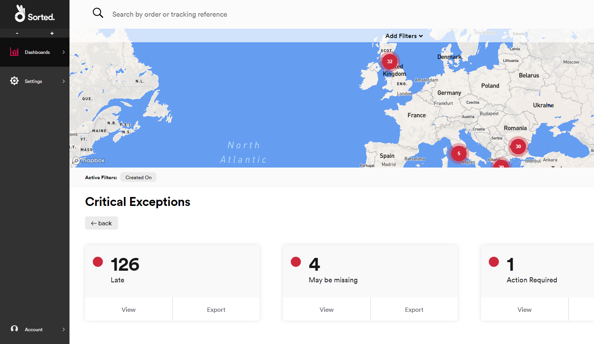
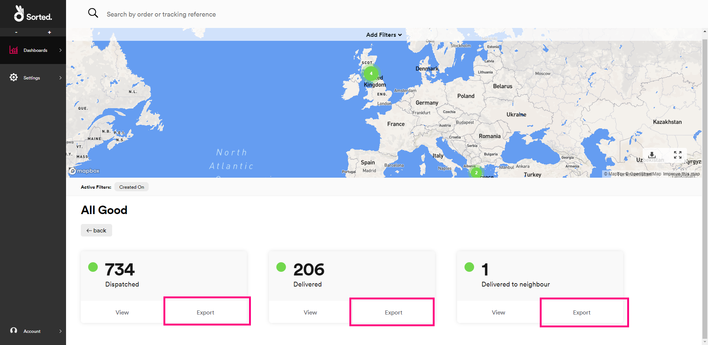

Monitoring Shipments
REACT's dashboards make keeping track of your shipment performance easy. This page explains how to use REACT's States, Calculated Events, and All Shipments dashboards to get timely information on how your shipments are progressing, and to spot potential problems.
Viewing an Overview of Your Shipments
The States dashboard gives you an overview of your current shipments. It indicates how many shipments you have in each particular shipment state, how many shipments are in exception states, and how many shipments you have in each geographical region.
To open the States dashboard, select the Dashboards > States menu option.

The States dashboard uses shipment states to group shipments into red/amber/green categories, helping you to identify individual shipments that may require attention. Shipment states are colour-coded into the following:
- Red (Critical Exceptions) - There is an issue with the shipment that cannot be resolved until you take action, or the shipment has been destroyed or lost. For example, a shipment in a state of Action Required would be classified as red.
- Amber (Other Exceptions) - There is an issue with the shipment that does not require you to take action. However, you might want to notify your customers. For example, a shipment in a state of Delivery failed would be classified as amber.
- Green (All Good) - There is no issue with the shipment. For example, a shipment in a state of Dispatched would be classified as green.
For a full list of REACT shipment states, including their colour classification, see the Shipment States page.
The States dashboard has two sections: a map indicating the delivery locations of your shipments and a row of tiles indicating how many of your shipments are in each colour status. You can select whether or not the map is displayed using the Show / Hide Map toggle.
Note
Only those shipments for which REACT holds an origin address are displayed on the map. For more information on registering shipment data, see the Registering Extra Shipment Information section of the Registering Shipments page.
If required, you can filter the data displayed using the filter controls explained in the Filtering Dashboard Data section.
Drilling Down on Shipment Details by Status
To view how many shipments you have in each shipment state:
Click the View button on the relevant colour tile. For example, to view how many shipments you had in each red shipment state, you would click View on the Critical Exceptions tile.
REACT displays tiles indicating how many shipments you have in each state for the selected colour.

To view a list of all the shipments in a particular state, click View on that state's tile.

REACT opens the All Shipments dashboard, filtered to display the relevant information.
Drilling Down on Shipment Details by Location
To view a list of all shipments that are currently in a particular geographical location, click a point on the map.
REACT opens the All Shipments dashboard, filtered to display the relevant information.
Exporting Shipment Details to CSV
There are several points on the States dashboard from which you can export shipment details to CSV:
To export details of all shipments, click Export on the All shipments tile.
To export details of all shipments in a particular colour status, click Export on the relevant colour tile.
To export details of all shipments in a particular state, click View on the relevant colour tile and then click Export on the required shipment state tile.

Alternatively, the Download button on the map enables you to export whatever data you care currently viewing, including any colour categories you may have selected and filters you may have applied.
For example, if you click View on the red Critical Exceptions tile and then click the Download button, then REACT exports a CSV file containing all shipments in red statuses. If you were to then apply a filter so that only shipments with a Promised Date of tomorrow were displayed, and then click the Download button again, then REACT would export a CSV file containing a list of those red shipments that had a Promised Date of tomorrow.
Viewing Calculated Events
The Calculated Events dashboard displays the number of your shipments that REACT has flagged as Late or May Be Missing. To open the Calculated Events dashboard, select the Dashboards > Calculated Events menu option.

Click View on a particular event tile to open a list of shipments that have been flagged with that calculated event in the All Shipments dashboard, or click Export to export that list to a CSV file.
Alternatively, click a location on the map to open a list of shipments originating from that location that have been flagged as either Late or May Be Missing in the All Shipments dashboard.
Note
A calculated event is an event that is generated by REACT's internal processing, rather than as a result of an external tracking update. For more information on how calculated events work in REACT, see the Calculated Events page.
Cached Shipment Data
To maximise performance, REACT caches data on the States and Calculated Events dashboards for ten minutes. If you make a particular request (say, clicking the View button on the Critical Exceptions tile to view how many of your shipments are in each individual red state), and then make an identical request within ten minutes, then REACT displays the cached data it received from the first request rather than making a separate database call. As such, you should bear in mind that the new request will not show any changes that have occurred since the first request was made.
If you make a different request, or if you make the same request more than ten minutes after the first request was made, then REACT refreshes the data.
This caching takes place at an organisational level, rather than a user level. For example, suppose than User A makes a particular request, and then User B makes the same request five minutes later. In this scenario, User B would receive the cached data from user A's request. However, if User B was to make the same request fifteen minutes later, then REACT would obtain new data.
Viewing Individual Shipments
The All Shipments dashboard gives you a list of all your individual shipments, and enables you to click through to view shipment event data.
To open the All Shipments dashboard, select the Dashboards > All Shipments menu option, or click View on the All Shipments tile.
The All Shipments dashboard displays a list of all your current shipments. You can filter the list using the filter controls explained in the Filtering Dashboard Data section.
To export the data displayed onscreen (including any filters you may have selected), click Export CSV.
Select a shipment record to view a summary of the registration and tracking information held on that shipment.
Adding Shipment Notes
To add a note to a shipment, select that shipment, click Add Note, add your message in the text box, and then click Save.
Shipment notes are grouped by date. To view notes for a particular date, click the + button next to that date in the Notes panel.
Adding shipment notes can help you to manage exceptions and customer service enquiries, enabling you to record any action or communication that has taken place for that specific shipment.
Tip
The shipment information displayed in the REACT UI is largely populated from the information provided at registration. The more information you provide at registration, the more useful this page will be. For more information on the information you can provide at registration, see the Registering Shipments page.
Searching For a Specific Shipment
All of REACT's UI pages display a search bar at the top. To view a specific shipment's details:
- Select the parameter you want to search by from the drop-down menu. REACT enables you to search by Tracking Reference, Custom Reference, or by one of your named shipment groupings.
Note
For more information on REACT shipment groups, see the Grouping Shipments page.
- Enter a search value and click the search icon or press Enter to search on the relevant shipment details.
If REACT only finds one shipment matching your criteria, then it opens the Shipment page for that shipment.
If REACT finds multiple shipments matching your criteria, then it opens the All Shipments page with all matching shipments listed.
Filtering Dashboard Data
REACT's dashboards enable you to filter the data displayed. Filtering can be particularly handy if you have large volumes of data to work with. You can filter data by Carriers, States, Shipment Origin, Shipment Destination, Order Date, Metadata, Registered Date, Shipped Date, Promised Date, Estimated Date, and Shipment Type.
Note
By default, REACT's dashboards only display those shipments created in the last 14 days. You can override this default filtration by adding your own date filters.
To filter data:
Click the Add Filters drop-down.

The Filters panel is displayed.
Select the filters you want to apply:
The Carriers, States, Origins, and Destinations filters use a search page. To add these filters, click Add on the relevant tile to display a list of available options, then select the options you require from the list. You can select multiple options if required.
Selected options are displayed in the right-hand column. To deselect an option, click on it.
Note
The Carriers list only displays those carriers for which you have an active carrier connector.
To select dates and Shipment Types, select the required option using the radio buttons.
The Metadata filter enables you to specify a key / value pair.
When filtering by metadata, REACT only displays information on shipments that contain the specified Key and Value as part of their data.
Note
For more information on using metadata in REACT, see the Registering Extra Shipment Information section of the Registering Shipments page.
Click Apply and close to apply your changes and return to the dashboard. REACT will now display only those shipments that meet your criteria.
Active filters appear on the Active Filters toolbar.

To deselect a filter from the Active Filters toolbar, click the filter's x button.
User Access
All REACT users can view the States and All Shipments pages, and view, edit and delete shipment notes.
Next Steps
Learn more about the REACT UI: